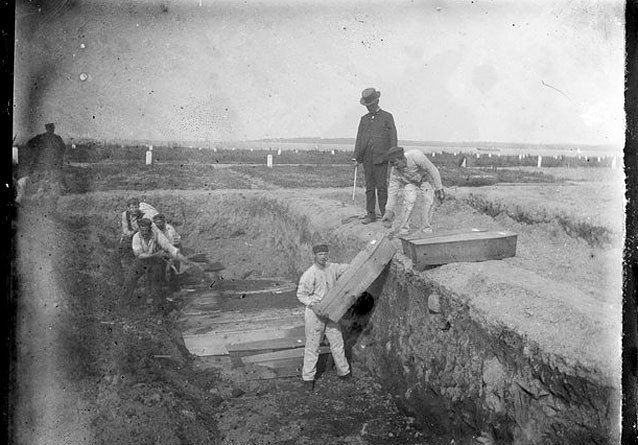

Videos relacionados por las isalas desaparecidas en nuestro mundo que habitamos las dejo algunos videos que quisieran ver sobre esto
Asimismo, aseguran que la gestión de la isla se realizará como una ONG y será mediambentalmente sostenible. «Todos los beneficios se reinvertirán en la propia isla», aseguran en su web.
Los socios que aporten los 99 euros tendrán derecho a tomar decisiones sobre el futuro de Poveglia. En caso de que finalmente no se gane la subasta, se devolverá la donación de cada cual, menos 19 euros que van a pagar los costes de registro, bancos y demás.
